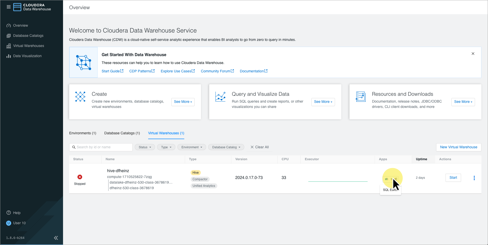
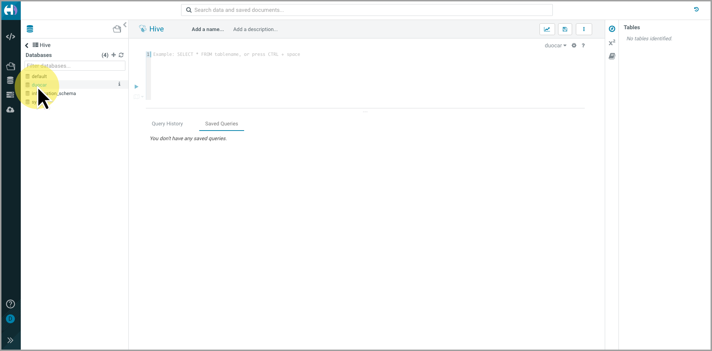

Data - Access, Audit, and Mask
This exercise uses the fictitious Duocar dataset. The data is stored in Amazon S3 and has been added to the company's data warehouse. Some of the data contains Personal Identifiable Information (PII). The company has requested the administrator only allow access to the information to those who need access to it to perform their job. In this instance, the full birth date is considered to be PII. Therefore, the birth date fields have been classified as PII and a PII policy has been created to mask the month and day.
Note
This exercise uses birth dates as PII. While a birth date may be considered PII in some scenarios, this exercise is completely hypothetical and has been designed to demonstrate the software and concepts. What data is PII and how to protect it is a legal issue and is beyond the scope of this course.
Access Data
{kind=link}
Warning
There is a known issue opening Hue with Safari on MacOS that results in an "Invalid CORS request." Please use another browser, like Chrome or Firefox, if you experience this issue.
Info
If you see a message near the top of the page that says, "Having trouble connection to server." or notice that the Virtual Warehouse is stopped. These are both normal. The Virtual Warehouse will start automatically when required.
-
Click Hue to launch Hue in a new browser tab. 
-
Once Hue launches, make sure you are in the Hive editor and
duocaris the selected database. If you are not in the Hive editor, select the </> from the left side menu. -
If
duocaris not selected, selectduocarfrom the list of databases. Ifdefaultselected and Tables is displayed, click the < to navigate back to the list of databases and then selectduocar.  -
Next, execute the following SQL by entering it into the editor and clicking the play/run button to show the drivers' data:
select * from drivers limit 10; -
Notice that the year for each driver's birth date varies, but the day and month are always
01. This is a result of the custom tag-based policy.
{kind=link}
{kind=link}
{kind=link}
{kind=link}
{kind=link}
Create a new joined table of birth dates.
Now that you have seen the effects of masking on the original tables, what happens when you create a new table from tables that have been masked? In the following steps, you will create a new table from the drivers and riders tables. You will view the new table and its data. You will also view the table in the data catalog.
-
Use the following SQL to create a new table that contains the driver's and rider's birth date for each ride. Replace the XX in the table name with your student number.
create table birth_dates_XX as select riders.birth_date as rider_bd, drivers.birth_date as driver_bd from rides join riders on rides.rider_id = riders.id join drivers on rides.driver_id = drivers.id; -
You may have to wait for Tez session. If so, it usually takes a few minutes for a session to start.
-
Once the table is created, use a SELECT statement to view the new table's contents.
-
Return the Data Warehouse tab in your browser and click the main menu icon.
-
Select the new table,
birth_dates_XXwhere XX is your student number, from the list. -
Select the Schema tab. What are the classifications for the new fields?
{kind=link}
{kind=link}
{kind=link}
{kind=link}
{kind=link}
{kind=link}
{kind=link}
{kind=link}
End of Exercise